Лабораторная работа 3. Реализация серверной части на Django REST. Документирование API
Практические работа 3.1
Проект: отдельный мини-проект
lr3_apiс приложениемgarage.
База: SQLite.
0. Подготовка проекта
Установка и создание проекта
pip install django
django-admin startproject lr3_api .
python manage.py startapp garage
Подключение приложения
lr3_api/settings.py → INSTALLED_APPS:
INSTALLED_APPS = [
# стандартные приложения Django …
'garage',
]
Модели данных
garage/models.py:
from django.db import models
class Owner(models.Model):
last_name = models.CharField("Фамилия", max_length=30)
first_name = models.CharField("Имя", max_length=30)
birth_date = models.DateTimeField("Дата рождения", null=True, blank=True)
def __str__(self): return f"{self.last_name} {self.first_name}"
class Meta: verbose_name="Автовладелец"; verbose_name_plural="Автовладельцы"; ordering=["last_name","first_name","id"]
class Car(models.Model):
plate_number = models.CharField("Гос. номер", max_length=15)
make = models.CharField("Марка", max_length=20)
model = models.CharField("Модель", max_length=20)
color = models.CharField("Цвет", max_length=30, null=True, blank=True)
def __str__(self): return f"{self.make} {self.model} ({self.plate_number})"
class Meta:
verbose_name="Автомобиль"; verbose_name_plural="Автомобили"
ordering=["make","model","plate_number"]
indexes=[models.Index(fields=["plate_number"]), models.Index(fields=["make","model"])]
class Ownership(models.Model):
owner = models.ForeignKey(Owner, on_delete=models.CASCADE, related_name="ownerships", verbose_name="Владелец")
car = models.ForeignKey(Car, on_delete=models.CASCADE, related_name="ownerships", verbose_name="Автомобиль")
start_date = models.DateTimeField("Дата начала")
end_date = models.DateTimeField("Дата окончания", null=True, blank=True)
def __str__(self): return f"{self.owner} ↔ {self.car} [{self.start_date} — {self.end_date or 'по н.в.'}]"
class Meta: verbose_name="Владение"; verbose_name_plural="Владения"; ordering=["-start_date","owner_id","car_id"]
Owner.add_to_class("cars",
models.ManyToManyField(Car, through=Ownership, related_name="owners", verbose_name="Автомобили", blank=True)
)
class DriverLicense(models.Model):
owner = models.ForeignKey(Owner, on_delete=models.CASCADE, related_name="licenses", verbose_name="Владелец")
number = models.CharField("Номер удостоверения", max_length=10)
type = models.CharField("Тип", max_length=10)
issue_date = models.DateTimeField("Дата выдачи")
def __str__(self): return f"ВУ {self.number} ({self.type}) — {self.owner}"
class Meta:
verbose_name="Водительское удостоверение"; verbose_name_plural="Водительские удостоверения"
ordering=["-issue_date","number"]; indexes=[models.Index(fields=["number"])]
Задание 1. Наполнение базы
Цель: создать 6–7 автовладельцев, 5–6 автомобилей, выдать каждому владельцу удостоверение, связать каждого владельца с 1–3 машинами через ассоциативную сущность «Владение».
/task1.py:
N_OWNERS = 7
N_CARS = 6
FIRST_NAMES = ["Олег", "Мария", "Дмитрий", "Анна", "Илья", "Елена", "Сергей"]
LAST_NAMES = ["Иванов", "Соколова", "Петров", "Кузнецова", "Смирнов", "Попова", "Васильев"]
COLORS = ["черный", "белый", "красный", "синий", "серый", "зеленый", None]
TYPES = ["A", "B", "C", "D", "BE", "CE", "DE"]
CAR_POOL = [
("Toyota", "Camry"),
("BMW", "3 Series"),
("Kia", "Rio"),
("Lada", "Vesta"),
("Hyundai", "Solaris"),
("Audi", "A4"),
]
PLATES = ["A123AA77", "B456BB77", "C789CC77", "E001EE77", "H234HH77", "O777OO77"]
def rand_dt(year_from=2014, year_to=datetime.now().year):
y = randint(year_from, year_to)
m = randint(1, 12)
d = randint(1, 28)
hh = randint(8, 19)
mm = randint(0, 59)
return datetime(y, m, d, hh, mm)
# Очистка данных
if RESET_DB:
Ownership.objects.all().delete()
DriverLicense.objects.all().delete()
Car.objects.all().delete()
Owner.objects.all().delete()
# Создаём владельцев
owners = []
for i in range(N_OWNERS):
o = Owner.objects.create(
last_name=LAST_NAMES[i % len(LAST_NAMES)],
first_name=FIRST_NAMES[i % len(FIRST_NAMES)],
birth_date=rand_dt(1980, 2002),
)
owners.append(o)
# Создаём автомобили
cars = []
for i in range(N_CARS):
make, model = CAR_POOL[i % len(CAR_POOL)]
car = Car.objects.create(
plate_number=PLATES[i],
make=make,
model=model,
color=choice(COLORS),
)
cars.append(car)
# Выдаём каждому владельцу удостоверение
for idx, owner in enumerate(owners, start=1):
issue = rand_dt(2015, datetime.now().year)
DriverLicense.objects.create(
owner=owner,
number=f"{700000+idx:010d}"[:10],
type=choice(TYPES),
issue_date=issue,
)
# Привязываем каждому владельцу от 1 до 3 машин через Ownership
for owner in owners:
k = randint(1, 3)
owned = sample(cars, k)
for car in owned:
start = rand_dt(2016, 2024)
# иногда сделаем дату окончания, иногда нет
if randint(0, 1):
end = start + timedelta(days=randint(200, 1200))
else:
end = None
Ownership.objects.create(
owner=owner,
car=car,
start_date=start,
end_date=end,
)
Скриншоты (консольный вывод):
- Владельцы и их удостоверения:
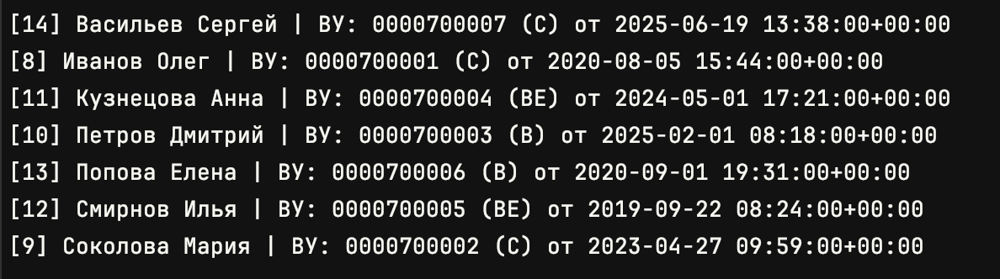
- Автомобили: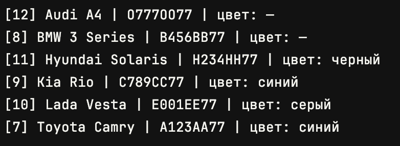
- Владения: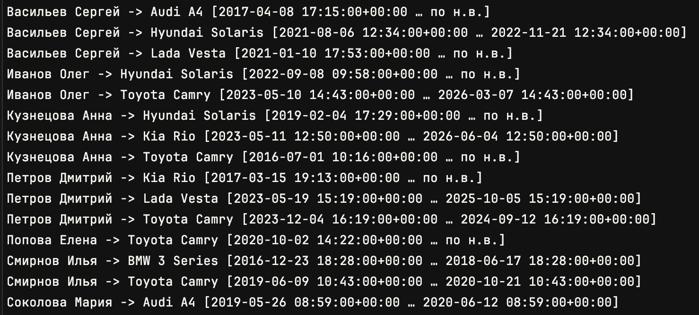
Задание 2. Запросы через ORM
2.1. Все машины марки «Toyota»
Car.objects.filter(make__iexact="Toyota")
Скриншот:
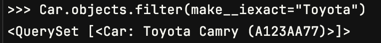
2.2. Все водители с именем «Олег»
Owner.objects.filter(first_name__iexact="Олег")
Скриншот:
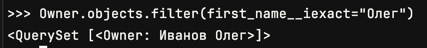
2.3. Случайный владелец → его id → его удостоверения
owner = random.choice(list(Owner.objects.all()))
owner.id
DriverLicense.objects.filter(owner_id=owner.id)
Скриншот:
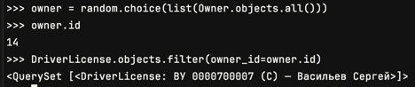
2.4. Владельцы машин черного цвета
Owner.objects.filter(ownerships__car__color__iexact="черный").distinct()
Скриншот:
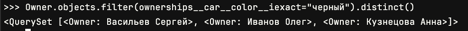
2.5. Владельцы, чьё владение началось в 2023 году
Owner.objects.filter(ownerships__start_date__year=2023).distinct()
Скриншот:
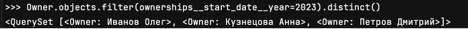
Практическое задание 3. Агрегаты, группировки, сортировки
Импорты:
from django.db.models import Min, Max, Count
3.1. Дата выдачи самого старшего водительского удостоверения
DriverLicense.objects.aggregate(oldest=Min("issue_date"))
Скриншот:
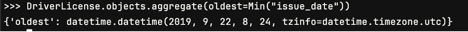
3.2. Самая поздняя дата владения машиной
Ownership.objects.aggregate(latest_start=Max("start_date"), latest_end=Max("end_date"))
Скриншот:
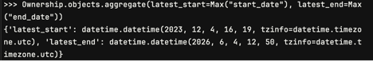
3.3. Количество машин для каждого водителя
owners_car_counts = (
Owner.objects
.values("id", "last_name", "first_name")
.annotate(car_count=Count("ownerships__car", distinct=True))
.order_by("last_name", "first_name")
)
list(owners_car_counts)[:10]
Скриншот:
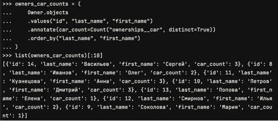
3.4. Количество машин каждой марки
Car.objects.values("make").annotate(total=Count("id")).order_by("make")
Скриншот:
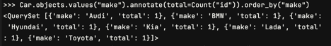
3.5. Отсортировать всех автовладельцев по дате выдачи удостоверения
Owner.objects.order_by("licenses__issue_date").distinct()
Скриншот:
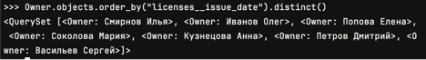
Вывод
- Практическое задание 1: БД наполнена объектами и связями.
- Практическое задание 2: Выполнены запросы выборки/фильтрации через shell.
- Практическое задание 3: Выполнены агрегаты, группировки и сортировки.